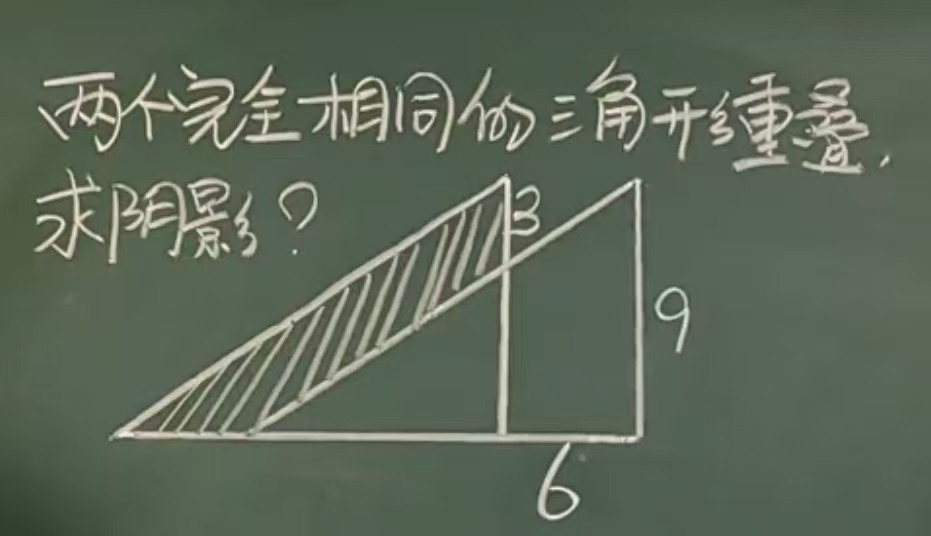
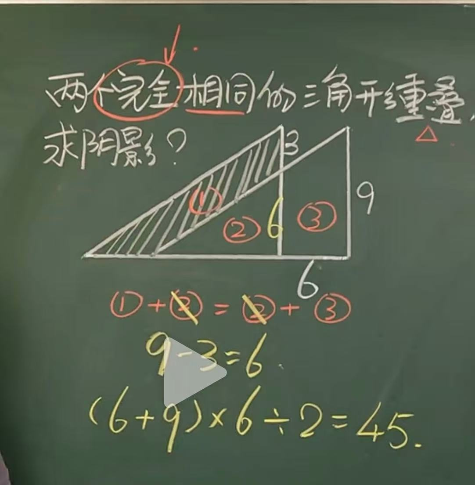

已知：两个三角形完全相同，图中标出了长度 6、9 和高 6。 Given: The two triangles are congruent, and the diagram shows lengths 6 and 9, with height 6.
求：阴影部分的面积。 Find: the area of the shaded region.

把阴影梯形周围分成三块，分别记作 ①、②、③。Split the figure around the shaded trapezoid into three parts, labeled 1, 2, and 3.
因为两个三角形全等，所以它们面积相等。Because the two triangles are congruent, their areas are equal.
两边同时减去 ②，就得到：Subtract part 2 from both sides, and we get:
所以阴影梯形的面积，可以直接用整个梯形来算。So the shaded trapezoid can be computed directly as one trapezoid.
梯形的上底是 6，下底是 9，高是 6。The trapezoid has top base 6, bottom base 9, and height 6.
梯形面积公式：Use the trapezoid area formula:
关键不是直接硬算，而是先利用全等三角形得到 ① = ③，再把阴影看成一个普通梯形。The key is not brute force. First use congruent triangles to get 1 equals 3, then treat the shaded part as an ordinary trapezoid.